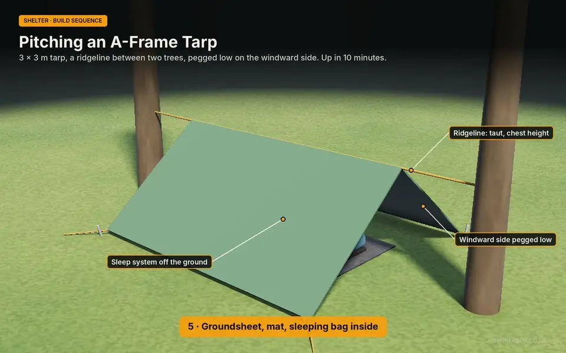
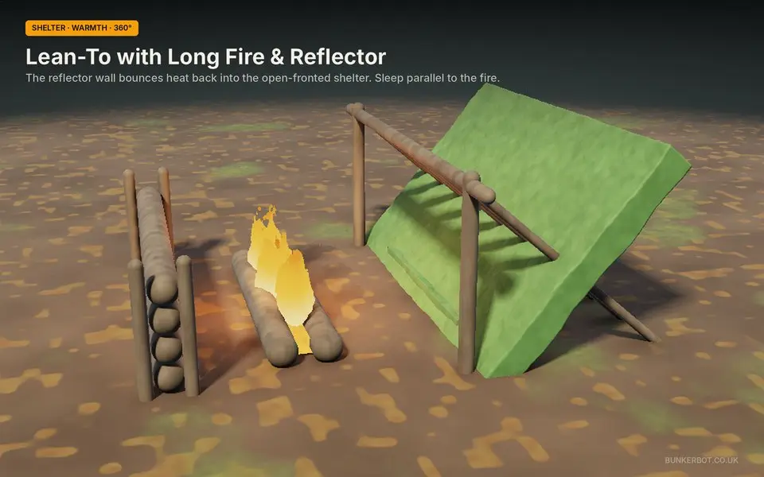
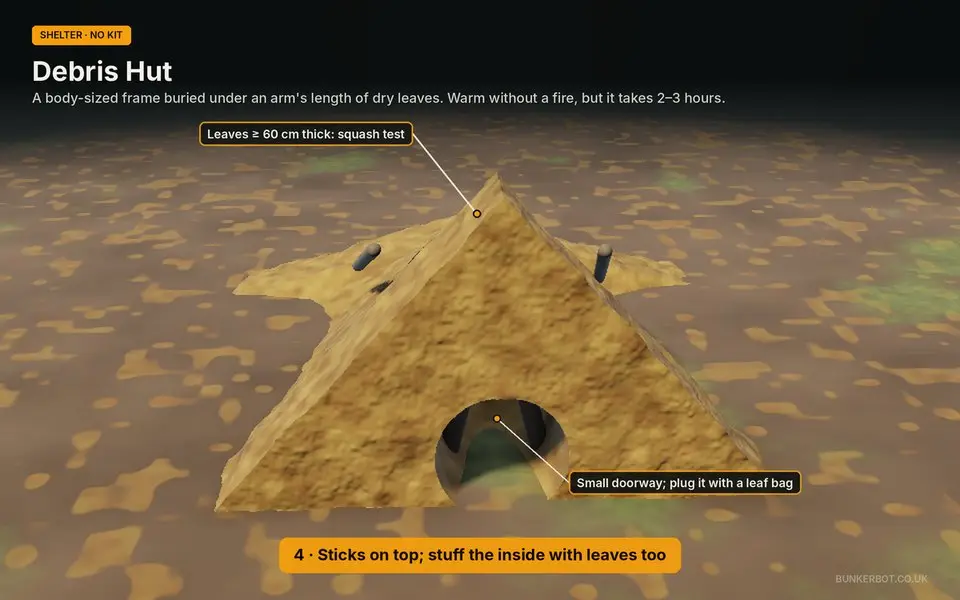
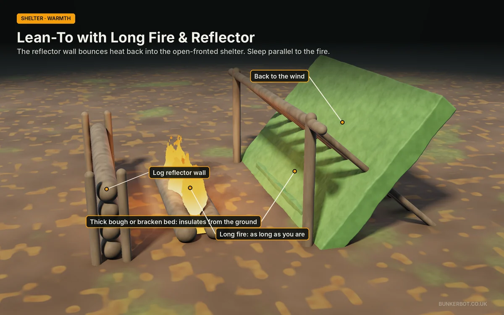

UK Field Shelters
Out of the wind, out of the wet, off the ground: the shelters that work in British weather.
1. Wind: wind chill strips heat fastest. 2. Wet: rain plus wind is the classic UK killer. 3. Ground: insulate beneath you. 4. Size: small shelters are warm shelters. Carry a shelter, don't plan to build one. A 3 × 3 m tarp or a bivvy bag weighs under 1 kg and goes up in minutes. Natural shelters take hours and a lot of calories. For permanent structures (cabins, earthbag, cob), see Shelter & Construction and Building & Structures.
1. Where You're Allowed to Sleep Out
| Where | Rule |
|---|---|
| England & Wales | Wild camping needs the landowner's permission. The exception is the Dartmoor commons, where the Supreme Court confirmed the public right to camp in 2025, under National Park byelaws (no fires, stay a maximum of 2 nights, leave no trace). Many upland farmers will say yes if you ask. |
| Scotland | The Land Reform (Scotland) Act 2003 gives access rights including lightweight wild camping on most unenclosed land. Follow the Scottish Outdoor Access Code: small groups, 2–3 nights, away from houses and roads, leave no trace. Some areas (e.g. Loch Lomond & The Trossachs) require permits in season. |
| Northern Ireland | Landowner permission needed. |
| In a real emergency | Your life takes priority. Shelter, then sort out permission afterwards. |
2. Choosing a Site: The 5 Ws
| W | Check |
|---|---|
| Wind | Use the lee of a hill, wall, hedge or wood. Avoid ridges and exposed saddles. Pitch the low end of the shelter into the wind. |
| Water | Near water but not in a dip, flood plain or dry stream bed. Cold air and rain collect in hollows. Mid-slope on flat ground is warmest. |
| Widowmakers | Look up: dead branches, leaning or dead trees (ash dieback makes this common in the UK). Never camp under a dead tree in wind. |
| Wildlife | Ticks in bracken and long grass (Lyme disease: check yourself daily), ant nests, livestock (cattle with calves are dangerous), and adders on heathland. |
| Wood | Fuel and poles nearby, if you need a fire. |
Also check for dry, flat, drained ground, morning sun if possible, and that you can't be seen from the road (for security and discretion).
3. Tarps: The Most Versatile Shelter


Kit
3 × 3 m tarp (silnylon or polyester, with 16+ tie-out points), 15 m ridgeline (paracord or 3 mm accessory cord), 6 × 2 m guylines, 8 pegs, a groundsheet.
Pitch sequence (A-frame)
- Pick two trees 4–5 m apart, with a clear, flat, sheltered spot between them.
- Ridgeline at chest height: a round turn and two half-hitches on one tree, a trucker's hitch (or prusik-tensioned line) on the other, and pull it drum-tight.
- Drape the tarp over the line. Secure the ends with prusik loops so you can slide and tension it.
- Peg the windward side low (or right to the ground in bad weather). Peg the lee side higher for headroom.
- Guy out the middle tie-outs so the fabric doesn't flap and pool rain.
- Groundsheet, mat and sleeping bag inside, kept away from the edges where drips land.
- Drip lines: tie a short string on the ridgeline outside the tarp so rain runs off it instead of along the line onto you.
Other pitches
| Pitch | When |
|---|---|
| A-frame | All-round; rain from either side |
| Lean-to / flying | Mild weather, sitting by a fire |
| Plough-point / diamond | One tree or walking pole; fast, low, good in wind |
| Closed wedge | Driving rain; one end fully closed into the wind |
| Hammock tarp | Over a hammock; off the wet ground entirely |
4. Bivvy Bags, Tents & Hammocks
| Shelter | Pros | Cons | UK verdict |
|---|---|---|---|
| Emergency bivvy (foil/orange plastic) | 100–300 g, £5–20 | Condensation-soaked by morning | Every bag and car should carry one |
| Breathable bivvy bag | Light, stealthy, pitch anywhere | Claustrophobic in prolonged rain | Excellent with a small tarp over the head end |
| Tarp + bivvy | Light, flexible, live under it | Skill needed | The bushcraft and prepper favourite |
| 1–2 person tent | Bug-proof, private, warm | Heavier, more visible | Best for families and long stays |
| Hammock + tarp + underquilt | Off wet ground, comfy | Needs trees; cold underneath without an underquilt | Great in UK woodland |
5. Debris Hut: The No-Kit Shelter

- Ridgepole: a sturdy pole about 1.5× your height. Rest one end on a stump, forked stick or bipod at hip height; the other end on the ground.
- Test it: lie under the pole. Your toes should nearly touch the low end with a hand's width of room above your chest.
- Ribs: lean sticks against the ridgepole on both sides, a hand-width apart, leaving a small doorway at the high end.
- Lattice: weave in thinner sticks and brash so the leaves don't fall through.
- Debris: pile on dry leaves, bracken, pine needles or grass at least an arm's length thick (60 cm–1 m). Squash test: push your fist in; if you feel the frame, add more.
- Hold it down: lay dead branches over the top against wind.
- Fill the inside with dry leaves, and stuff a bag or bundle of leaves into the doorway once you're in.
- Time: 2–3 hours for one person. Start well before dark.
In wet weather, a debris hut is far better with a bin bag or poncho laid under the outer leaf layer as a waterproof skin.
6. Lean-To with a Long Fire & Reflector

- Frame: a cross-pole lashed between two trees or forked uprights at ~1.5 m, with poles sloping back to the ground at ~45° with the back to the wind.
- Thatch: layer spruce boughs, bracken or a tarp, like roof tiles, from the bottom up.
- Bed: a 20–30 cm thick bed of boughs, bracken or leaves between two logs.
- Long fire: two parallel logs, as long as you are, ~1 m in front of the opening, with the fire between them.
- Reflector: a wall of stacked green logs held between stakes on the far side of the fire bounces heat into the shelter.
- Fuel: a long fire burns roughly an armful of wrist-thick wood per hour. Gather it all before dark.
7. Urban & Vehicle Shelter
- Your car is a shelter: a winter car kit (blankets or a sleeping bag, food, water, torch, shovel, phone charger) turns a stuck car into a refuge. Run the engine for 10 minutes an hour only, with the exhaust clear of snow, and crack a window, because carbon monoxide builds up.
- Buildings: choose interior rooms, upper floors in floods, away from glass. Insulate the floor with cardboard.
- Cardboard and newspaper are excellent insulation under you and stuffed into clothing.
- Stay "grey": in a breakdown of order, a visible camp attracts trouble. Choose discreet, defensible spots with two ways out.
8. Knots You Need
| Knot | Use |
|---|---|
| Round turn & two half-hitches | Ridgeline to a tree: secure and easy to untie |
| Trucker's hitch | Tensioning a ridgeline or load |
| Prusik | Sliding, gripping loop on a ridgeline |
| Taut-line hitch | Adjustable guylines |
| Bowline | Fixed loop that won't slip |
| Clove hitch | Quick attachment to a pole |
| Square lashing / tripod lashing | Frames for lean-tos and tripods |
| Slippery (quick-release) half-hitch | Fast take-down in the dark |
Practise them with your eyes shut, and with cold, wet hands.
9. Collapse Collapse Protocol: Long-Term Camp
Cutting live wood, building permanent structures and camping long-term on land without permission are offences today.
- Upgrade over time: tarp → tarp with walls of woven brash → a wattle-and-daub or log hut → a permanent structure.
- Raised sleeping platforms get you away from damp, cold ground and rodents.
- Fire indoors needs a chimney or a stone hearth with a smoke hole and a raised roof. Never use an enclosed fire without ventilation.
- Sanitation: a latrine at least 50 m from water and downhill from camp, with ash or soil over each use.
- Water uphill and upstream; wash and dump grey water downstream. See Field Water.
- Defence and discretion: camp away from roads and paths, keep light and smoke discipline at night, and have a planned exit route.
10. Kit Tiers
Tier 0: Emergency (£10–30)
- Emergency bivvy bag (orange: also a signal)
- Space blanket, 10 m paracord, 4 bin bags, buff
Tier 1: Starter (£80–250)
- 3 × 3 m tarp, 15 m ridgeline, 6 guylines, 8 pegs, prusik loops
- Groundsheet, closed-cell foam mat, 3-season sleeping bag
- Skills: A-frame pitch in under 10 min; the four main knots
Tier 2: All-season (£250–800)
- Breathable bivvy bag + lightweight tarp, or a 1–2 person tent
- Insulated air mat (R 4+), winter sleeping bag
- Hammock + underquilt (woodland option)
- Folding saw, axe, fire pan
- Skills: debris hut, lean-to with a long fire, overnight in winter
Tier 3: Family & vehicle (£800–2,500)
- 4-season family tent + tarps, sleeping systems for everyone
- Car winter kit in every vehicle
- Hot tent with a wood stove (canvas tent + stove jack) for long stays
Tier 4: Retreat
- Pre-positioned shelter at your bug-out location (cabin, caravan, outbuilding) with stored bedding and fuel
- Building tools and materials (see Building & Structures)
Related Sections: Fire Making & Staying Warm → Field Water → Bug-Out Bags & Home Prepping → Shelter & Construction → Navigation